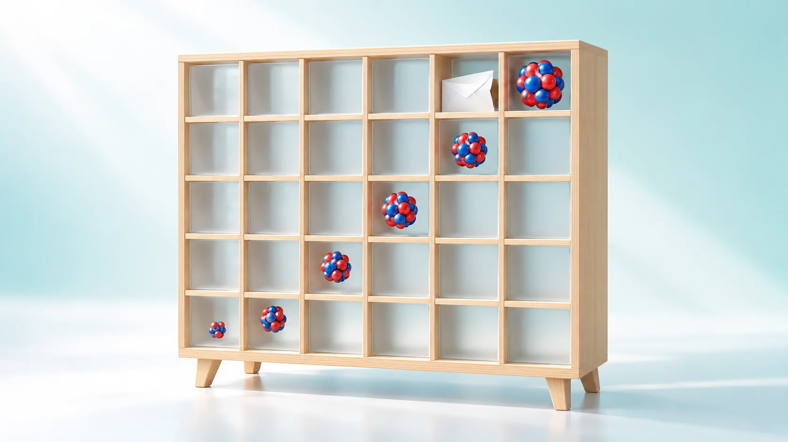
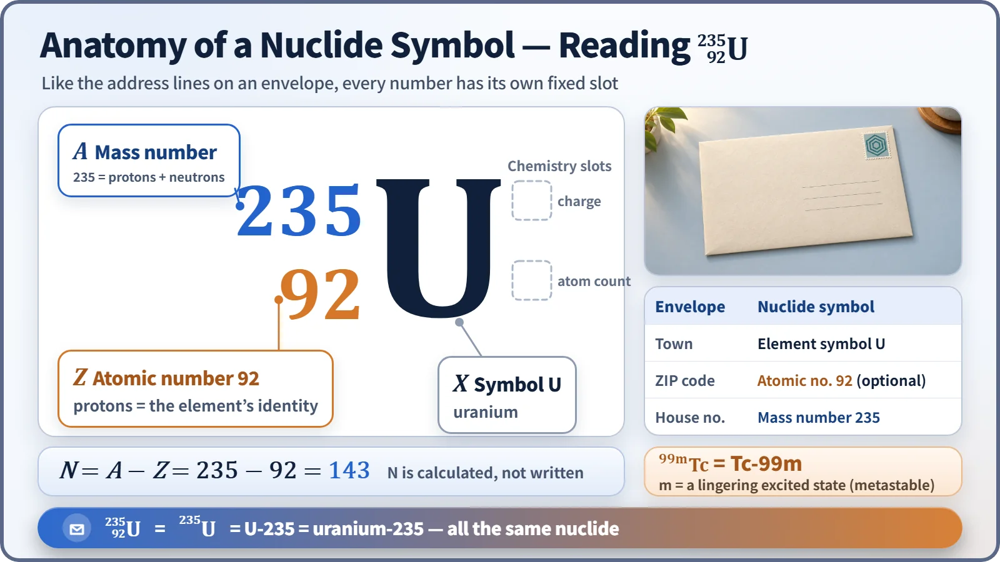
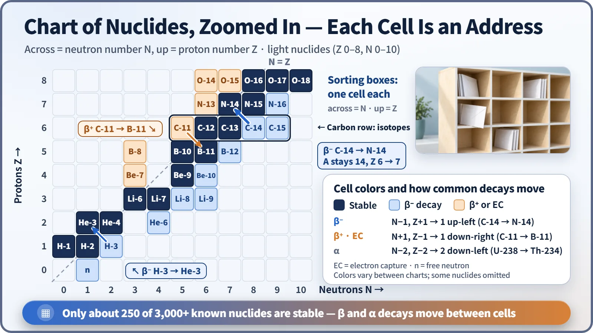

Nuclear & Radiation Basics · 007
Every Box on the Envelope Means Something — How to Read Nuclide Notation
Like an address on an envelope, every number in a nuclide symbol has its own slot, and reaction equations balance like a ledger.

A nuclide symbol such as ²³⁵₉₂U has fixed slots: the mass number A (protons plus neutrons) at the upper left, the atomic number Z (protons) at the lower left, and the element symbol in the middle. The neutron count is N = A − Z, and in any nuclear reaction the top numbers and the bottom numbers each add up to the same total on both sides. [1]
Is the 235 in "uranium-235" its place in the periodic table?
No. The periodic table has nowhere near that many elements; uranium is element 92. The 235 carries different information, and the same goes for cesium-137, cobalt-60 and iodine-131. The rules for reading these numbers are nuclide notation. A nuclide is one particular kind of nucleus with a set number of protons and neutrons, so two uranium nuclei with different neutron counts are different nuclides.
Just as an envelope has fixed boxes for the address
An envelope has a place for the town, the house number and the ZIP code. Nuclide notation is the same kind of form: the element symbol X in the middle, the mass number A at the upper left and the atomic number Z at the lower left. Uranium-235 becomes ²³⁵₉₂U.

Mass number A (235) is the total of protons and neutrons, together called nucleons. Atomic number Z (92) is the number of protons, which decides the element: ninety-two protons is always uranium. The neutron number isn't written, but one subtraction gives it: N = A − Z = 235 − 92 = 143; for uranium-238 it is 238 − 92 = 146.
The element symbol is the town, the atomic number the ZIP code and the mass number the house number, pinning down which house (nuclide) in the same town (element). One difference: a ZIP code is a human convention, while the atomic number is a real count of protons.
Why the bottom number is often left off
If town names and ZIP codes are paired one-to-one, writing either one gets the letter delivered. Writing U already settles the atomic number 92, so the bottom number is often dropped. All of these name the same nuclide: ²³⁵₉₂U = ²³⁵U = U-235 = uranium-235.
The number after a hyphen is always the mass number. Cesium-137 has mass number 137; cesium's atomic number is 55, so it has 82 neutrons.
The m after the number: same house, upstairs for a while
Technetium-99m (⁹⁹ᵐTc), widely used in nuclear medicine scans, has 43 protons and 56 neutrons, the same makeup as technetium-99, but its nucleus lingers in a higher-energy excited state; m stands for metastable. With a half-life of about 6 hours it gives off a 140 keV gamma ray and drops to the ground state, Tc-99. Cameras pick up that gamma ray to image the body. It doesn't become a different element; it only sets down energy. [2]
The top and bottom numbers in a reaction balance like a ledger
On both sides of a reaction arrow, the sum of the top numbers (nucleons) and the sum of the bottom numbers (charge) must match. One example of uranium-235 fission:
¹₀n + ²³⁵₉₂U → ¹⁴¹₅₆Ba + ⁹²₃₆Kr + 3 ¹₀n
| Left side | Right side | |
|---|---|---|
| Top numbers (nucleons) | 1 + 235 = 236 | 141 + 92 + 3 = 236 |
| Bottom numbers (charge) | 0 + 92 = 92 | 56 + 36 = 92 |
Carbon-14's beta decay, ¹⁴₆C → ¹⁴₇N + ⁰₋₁e + antineutrino, balances too: top 14 = 14 + 0, bottom 6 = 7 + (−1), where the electron's −1 is a charge. What balances is the count, not the precise mass; the small mass that goes missing is the story of E = mc².
3,000-plus nuclides on one sheet: the chart of nuclides
The chart of nuclides (Segrè chart) puts neutron number N on the horizontal axis and proton number Z on the vertical axis, giving every nuclide its own cell like a post-office sorting rack. [1]

Each row shares an atomic number, so it holds a family of isotopes. More than 3,000 nuclides have been identified, but only about 250 are stable, forming a diagonal band that, among light nuclides, sits near the N = Z line. In beta decay a neutron becomes a proton (carbon-14 → nitrogen-14): the mass number stays 14 and the nuclide moves one cell up and to the left. When a proton becomes a neutron, as in carbon-11 used for PET scans, it moves one cell down and to the right. Alpha decay loses two protons and two neutrons, moving two cells down and to the left. [3]
Key takeaways
The element symbol is the town, the bottom number the ZIP code, the top number the house number, and m means upstairs. Subtract the bottom from the top for the neutron count, and expect the top and bottom sums to balance in every reaction. Fuel enrichment, coolant monitoring of I-131 and Cs-137, and environmental radioactivity reports are all written in this notation.